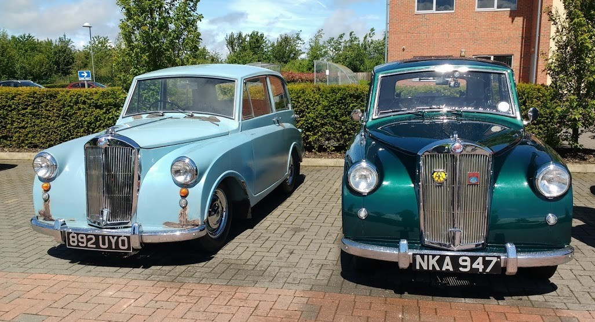

<link href="{{ site.baseurl }}/events/article.css" rel="stylesheet" type="text/css">
<main>
    <article>
        <ol id="breadcrumb">
            <li>
                <a href="{{ site.baseurl }}/">Home</a>
            </li>
            <li>
                <a href="{{ site.baseurl }}/events">Events</a>
            </li>
            <li>
                <a href="{{ site.baseurl }}/events/local">Local</a>
            </li>
            <li>Innovation Centre 2019</li>
        </ol>
        <div id="content">
            <h1>Innovation Centre</h1>
            <h2>Market Harborough, Leicestershire, 16<sup>th</sup> June 2019</h2>
            <p>Despite a forecast for rain around midday I set off at about 9:15 AM to meet Phil Aychurch at the Market Harborough meet. I didn’t even get to the top of the road before it started to rain, which it did in varying degrees for the whole of the 15-mile trip. On arrival, I joined the other few hardy souls in the café for a coffee. Numbers were definitely down what with the weather and it being Father’s Day. Phil made it about 10:15 in his newly Herald-engined Mayflower on its first successful voyage. The sun eventually came out at about the time the forecast was for rain!</p>
            <p>Paul Burgess (1200)</p>
            
        </div>
    </article>
    <aside>
        <h2>Members’ cars in attendance</h2>
        <ul class="disableListStyles">
            <li>
                <h3>Paul Burgess</h3>
                <div>
                    <div class="numberPlateMarker">NKA 947</div>
                </div>
            </li>
            <li>
                <h3>Phil Aychurch</h3>
                <div>
                    <div class="numberPlateMarker">892 UYO</div>
                </div>
            </li>
        </ul>
    </aside>
</main>
